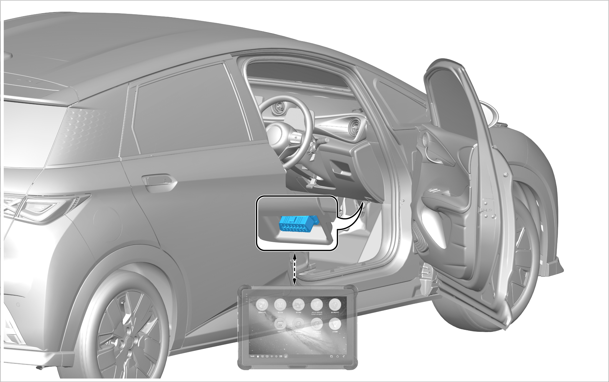

Configuration writing
Conditions for re-calibrating the radar angle: replace with a new one.
Configuration writing steps:
Connect the VDS and enter the diagnostic system interface.

Enter the ACC interface.
Tap to calibrate.
Select the configuration corresponding to the vehicle model to perform configuration writing.
Conditions for re-calibrating radar angle:
The existing one is replaced with a new one.
The radar is removed or installed.
The radar position changes during maintenance.
The system prompts that the radar angle deviation is too large.
Necessary equipment:
VDS
ACC/MPC static calibration service tool
Adjusting bolt (model: 3.5 mm hexagonal socket head cap bolt)
Description of ACC mid-range radar adjusting bolt:
The upper right bolt is used to adjust the horizontal angle.
The lower left bolt is used to adjust the vertical angle.
Calibration process of ACC mid-range radar
Preparation for calibration:
Four-wheel alignment should be completed for the vehicle.
The calibration site for placing equipment and parking vehicles must be flat.
The vehicle suspension and steering system are in normal condition without damage.
The windshield washer fluid, coolant and brake fluid are filled up.
The tire pressure is normal.
The vehicle is unloaded.
The spare tire and on-board tools are installed in place.
Calibration process:
After the vehicle is parked, pull up the handbrake, center the steering wheel, power on the vehicle, and move the equipment to the front of the vehicle.
Fix four disc assemblies on four tires by using three high-strength magnets to attach them on the brake disc and installing the two discs with scales on two rear wheels. Point the laser scale at the rear wheels with the display screen facing upward, and press and hold to start the power supply. Slightly adjust the angle so that laser beams illuminate on the scales of rear discs. At this time, slightly adjust the steering wheel left and right to make the readings of the positions illuminated by two laser beams the same so as to ensure that the wheels are completely aligned (the laser scale is in power-saving mode. It will automatically power off if it is not operated for a period of time and can be woken up by pressing the switch again).
Install the laser scales on the 2 front wheel discs in a reverse direction to make them face the calibration tooling, adjust the angle so that the laser beam irradiates horizontally on the ranging plate center marking line of the cross beam of the calibration tool. At this time, observe the distance values displayed on the 2 laser scales, and twist to adjust the base of the calibration tool to make the distance values on laser scales consistent and meet the calibration requirements. Then move the base left and right to make the pointer indication value of ranging plate on the cross beam scale consistent. At this time, determine the position of calibration tool. Rotate 4 adjusting legs clockwise to contact the ground and fix the position.
Press the up and down buttons on the manual controller to change the value on the display screen to "18.6". At this time, observe that the horizontal bubble behind the reflection board reaches the center position, and the reflection board is vertical to the ground.
Turn the battery and switch behind the reflection board to "ON" position, so that a laser beam can be emitted from the center of the front of the reflection board. Take out the label at the front radar of the vehicle. Rotate the hand wheel at the top of the equipment, adjust the height of laser beam to make it irradiate in the center of ACC radar. At this time, the calibration tool is completely positioned.
Turn on the ACC radar, connect the VDS, enter the diagnostic system interface, select the calibration procedure and operate according to the instructions on the VDS: Step 1: When VDS prompts that the reflection board is in position 1, press the up and down buttons of the manual controller within 20 seconds to change its displayed value to 18.1, and the actual corresponding angle of the reflection board is -2°. Step 2: When VDS prompts that the reflection board is in position 2, press the up and down buttons of the manual controller within 20 seconds to change its displayed value to 19.2, and the actual angle of the corresponding reflection board is +2°. Step 3: When VDS prompts that the reflection board is in position 3, press the up and down buttons of the manual controller within 20 seconds to change its displayed value to 18.6, and the actual corresponding angle of the reflection board is 0.
After operation, VDS will automatically display whether the radar needs to be calibrated and display specific information for calibration. After calibration as required, use the VDS to test once again. If the diagnosis result shows that the number of turns to be adjusted is 0 and no calibration is needed, the calibration is successful. (The number of turns to be adjusted can be ignored if it is 2.5 turns).
Configuration writing
Conditions for re-writing the model configuration: replace with a new one.
Configuration writing steps:
Connect the VDS and enter the diagnostic system interface.
Enter the multi-purpose camera interface.
Tap to calibrate.
Select the configuration corresponding to the vehicle model to perform configuration writing.
Conditions for re-calibration:
The sample is replaced with a new one.
The multi-purpose camera assembly is removed or installed.
The front windshield is replaced.
Calibration process of multi-purpose camera (MPC)
Preparation for calibration:
Four-wheel alignment should be completed for the vehicle.
The calibration site for placing equipment and parking vehicles must be flat.
The illumination of the calibration plate must be uniform during calibration.
The tire pressure is normal.
The vehicle is unloaded.
The headlight must be turned off.
The vehicle speed is 0, and the vehicle is powered on.
There is no obstruction between the calibration plate and camera.
Calibration process:
Preparation for calibration:
Four-wheel alignment should be completed for the vehicle.
The calibration site for placing equipment and parking vehicles must be flat.
The illumination of the calibration plate must be uniform during calibration.
The tire pressure is normal.
The vehicle is unloaded.
The headlight must be turned off.
The vehicle speed is 0, and the vehicle is powered on.
There is no obstruction between the calibration plate and camera.
Calibration process:
After the vehicle is parked, pull up the handbrake, center the steering wheel, power on the vehicle, and move the equipment to the front of the vehicle.
Fix four disc assemblies on four tires by using three high-strength magnets to attach them on the brake disc and installing the two discs with scales on two rear wheels. Point the laser scale at the rear wheels with the display screen facing upward, and press and hold to start the power supply. Slightly adjust the angle so that laser beams illuminate on the scales of rear discs. At this time, slightly adjust the steering wheel left and right to make the readings of the positions illuminated by two laser beams the same so as to ensure that the wheels are completely aligned (the laser scale is in power-saving mode. It will automatically power off if it is not operated for a period of time and can be woken up by pressing the switch again).
Install the laser scales on the 2 front wheel discs in a reverse direction to make them face the calibration tooling, adjust the angle so that the laser beam irradiates horizontally on the ranging plate center marking line of the cross beam of the calibration tool. At this time, observe the distance values displayed on the 2 laser scales, and twist to adjust the base of the calibration tool to make the distance values on laser scales consistent and meet the calibration requirements. Then move the base left and right to make the pointer indication value of ranging plate on the cross beam scale consistent. At this time, determine the position of calibration tool. Rotate 4 adjusting legs clockwise to contact the ground and fix the position.
Loosen the 3 handles fixing the scale behind the pillar to allow the scale the fall to the ground and tighten the handles. At this time, the value indicated by the pointer is the actual distance from the black and white pattern center of calibration plate to the ground.
Rotate the lifting device handle on the pillar, and move the MPC2 calibration plate assembly to a height that meets the calibration requirements (the center of camera calibration plate shall be at the same height as the camera) according to the indicated value of the pointer behind the pillar. At this time, the position of the equipment and the vehicle has been determined.
Use VDS to enter the multi-purpose camera interface, click the calibration option and operate according to the instructions on the computer until the computer prompts that the calibration is successful.
Calibration process:
After the vehicle is parked, pull up the handbrake, center the steering wheel, power on the vehicle, and move the equipment to the front of the vehicle.
Fix four disc assemblies on four tires by using three high-strength magnets to attach them on the brake disc and installing the two discs with scales on two rear wheels. Point the laser scale at the rear wheels with the display screen facing upward, and press and hold to start the power supply. Slightly adjust the angle so that laser beams illuminate on the scales of rear discs. At this time, slightly adjust the steering wheel left and right to make the readings of the positions illuminated by two laser beams the same so as to ensure that the wheels are completely aligned (the laser scale is in power-saving mode. It will automatically power off if it is not operated for a period of time and can be woken up by pressing the switch again).
Install the laser scales on the 2 front wheel discs in a reverse direction to make them face the calibration tooling, adjust the angle so that the laser beam irradiates horizontally on the ranging plate center marking line of the cross beam of the calibration tool. At this time, observe the distance values displayed on the 2 laser scales, and twist to adjust the base of the calibration tool to make the distance values on laser scales consistent and meet the calibration requirements. Then move the base left and right to make the pointer indication value of ranging plate on the cross beam scale consistent. At this time, determine the position of calibration tool. Rotate 4 adjusting legs clockwise to contact the ground and fix the position.
Loosen the 3 handles fixing the scale behind the pillar to allow the scale the fall to the ground and tighten the handles. At this time, the value indicated by the pointer is the actual distance from the black and white pattern center of calibration plate to the ground.
Rotate the lifting device handle on the pillar, and move the MPC2 calibration plate assembly to a height that meets the calibration requirements (the center of camera calibration plate shall be at the same height as the camera) according to the indicated value of the pointer behind the pillar. At this time, the position of the equipment and the vehicle has been determined.
Use VDS to enter the multi-purpose camera interface, click the calibration option and operate according to the instructions on the computer until the computer prompts that the calibration is successful.